比特幣現時處於健康的回調期，回撤大約20%，非常合理且正常，相信幣圈老手已經司空見慣，相反，有些幣圈新手則大驚小怪天天來inbox問我是否要賣掉。答案是：是的。因為如你每天都提心吊膽，有兩個可能性，要不你借錢來炒賣或者all in了，就是你不了解比特幣是什麼，那賣掉是正確的，不要跟我搶比特幣。
有看過往專欄的朋友都會知道，最懶惰、最高性價比的方法就是DCA，即平均成本法/定時定額法。最佳買入時間為減半前400天，而最佳賣出時間為減半後550天。如何買、何時買、買什麼、買多少、哪裡買等各個重點都已在patreon交待清楚，相信已經沒什麼大問題了，只需等待，等時間幫我們賺錢。
奈何，仍不時會有人問些無意義問題。最無意義的是，「比特幣見頂了嗎？」、「比特幣見底了嗎？」，如果有人能準確答你，他要不是未來人，就是神仙。我不知道，如果我知道，我也就不用依靠algo、不用依賴data了。
除了上述無聊問題外，也總會有人愛問「我等比特幣回調50%才開始DCA可以嗎？」，然後隔天再問「我等比特幣回調40%才開始DCA可以嗎？」，然後一星期後再問「我等比特幣回調30%才開始DCA可以嗎？」… 無限輪迴。很慘，我很熱愛投資者教育，很想教懂他，但這樣我真的很難做。
千萬不要以為只有一個半個人是這樣，我告訴你，是有很多很多，數不清。
因此，我決定耐心進行教化。這次專欄就來測試一下，不同調整幅度撈底/抄低的策略。
首先，下次減半將在4月發生，因此，我拿來了2020年初至今的比特幣數據進行backtest。
第一種常見的撈底/加注策略為，線性加注。即下跌10%加一注，下跌20%再加一注，如此類推。舊文章提過，比特幣牛市大多回調40-60%不等，因此最後一注放在50%較合理。為什麼不下跌60%再加，下跌70%再加，直至99%加第十注呢？
如果是這樣，那就要一開首已留十注注碼，那便代表，如果牛浪最後只有下跌40%的回撤，那資金使用率就只是40%，100萬會有60萬閒置！嚴重影響整體的回報。因此，第一個策略只會加最多五注。
加注scatter plot如下：
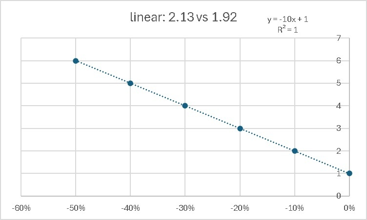
倉位如下：
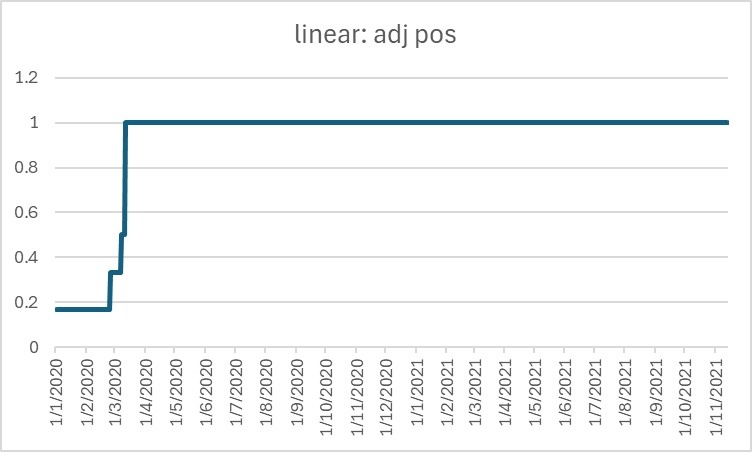
最後Equity curve如下：
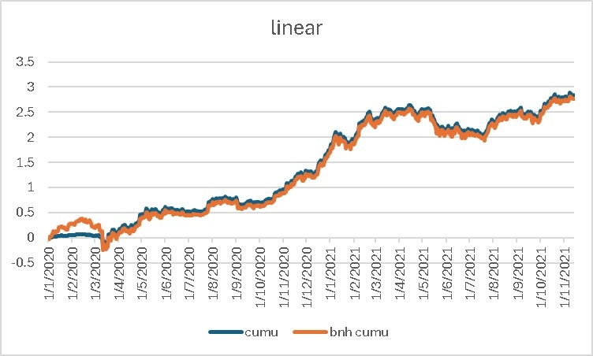
結果顯示，這策略Sharpe為2.13，而benchmark的則為1.92，證明這策略比長揸好些。
第二種策略為，以指數（exponential）的方式加注。有些人會認為，跌20%反彈力度應該會比跌10%的反彈力大不止一倍。或者，市場不乏有人愛用馬丁（martigale）策略。因此，設計為，跌10%加兩注，跌20%加四注，跌30%加八注，跌40%加十六注，跌50%加三十二注。
加注scatter plot如下：
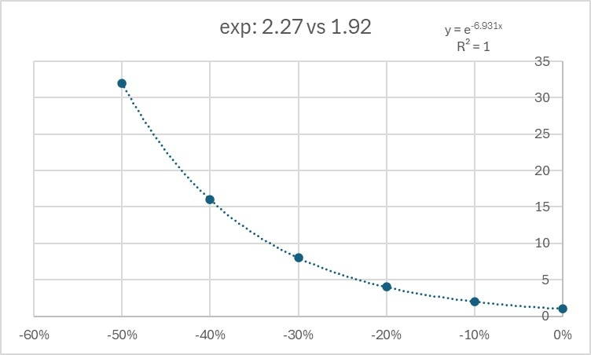
倉位如下：
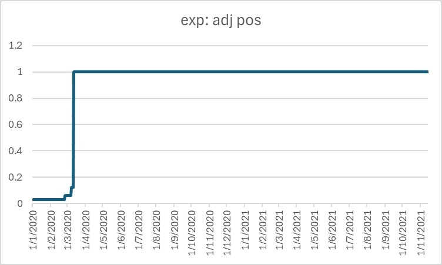
Equity curve如下：
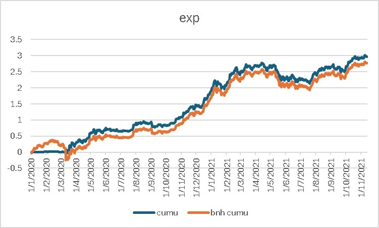
結果顯示，這策略Sharpe為2.27，而benchmark的則為1.92，證明這策略同樣比benchmark好，亦優於線性加注策略。
但這是否就代表我們要用指數式方法撈底呢？重新看看兩個equity curve，後段大部分時間是一樣的，純粹前段不同。
因為2020年3月中全球金融市場被美國急劇減息嚇怕而出現大跌，歐美中港市場全部大跌3成，比特幣也受波及大跌50%。
因此，2020年3月便一次過觸發我們設計出來的所有抄底機制，等於一口氣all in了。
這是巧合嗎？我們可以拿走有利我們的數據段看看，因此，我們取走2020年3月及之前的數據，即backtest由2020年4月開始。
再來，應用線性加注策略。
倉位如下：
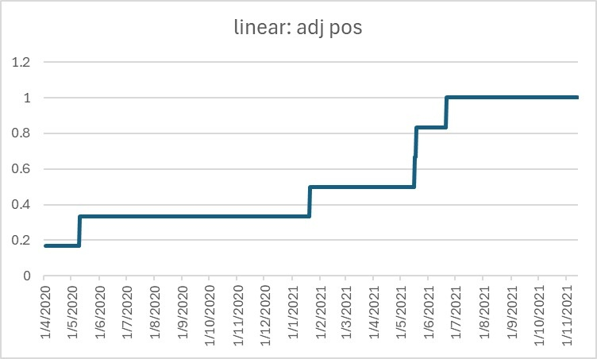
Equity curve如下：
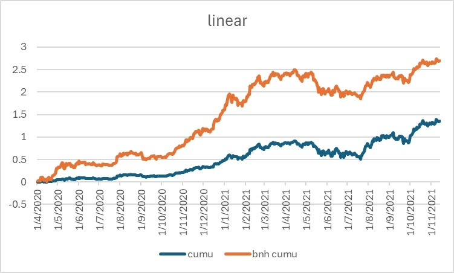
結果顯示，這策略Sharpe為1.81，而benchmark的則為2.33，即這策略比benchmark差。
當然，也要試試指數式加注策略。
倉位如下：
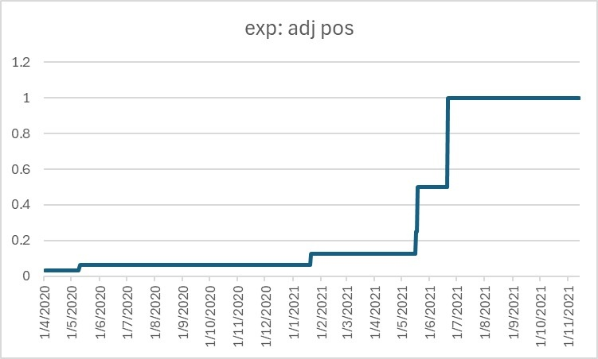
Equity curve如下：
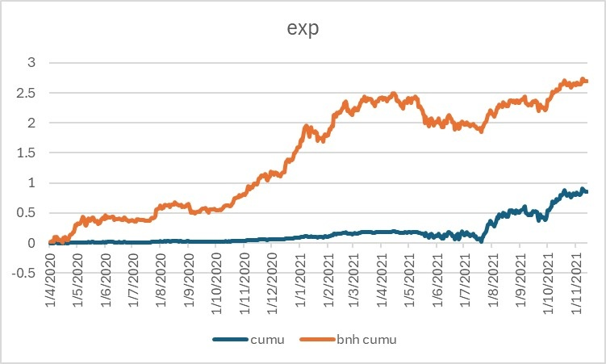
結果顯示，這策略Sharpe為1.48，而benchmark的則為2.33，即這策略比benchmark差，更比線性加注策略差。
有沒有留意，只是拿走3個月數據，整個策略結果就不一樣了？由2020年1月開始看，指數式 > 線性式 > 長線持有；但由2020年4月開始看，長線持有 > 線性式 > 指數式，結果完全相反。
為什麼會這樣？只要我們有特定策略，有特定參數，就一定會較適合特定市況。例如指數式就是留最大注碼在終極大跌時出手，若剛好很快就有超級大跌，就能極速deploy所有資金，就能賺盡；但如果沒有出現超級大跌，那總回報就會超低，因為完全沒有讓你出手的機會，導致有大量閒置資金擺在一邊浪費。
看到這裡，一定會有人想出各式各種的加注策略。我會告訴你，結果都是大同小異，都是適合某一種情況；但若那個情況沒出現，就會比DCA/長線持有差。
最後，多做一個backtest結果給大家。
在2016-2017年牛市時，大部分調整浪都是35%左右，由29-38%不等，非常有規律。
那我們最後就設計一個線性加注策略，不過只預期最大回調為40%。即跌10%加一注，跌20%加兩注，跌30%加三注，跌40%加四注就完了。
加注scatter plot如下：
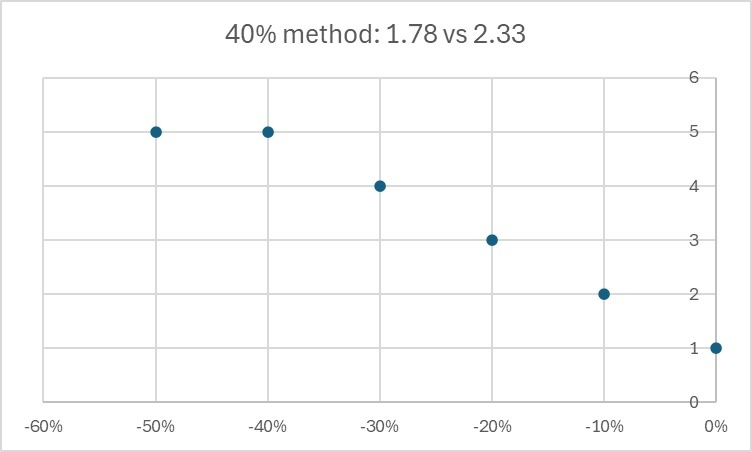
倉位如下：
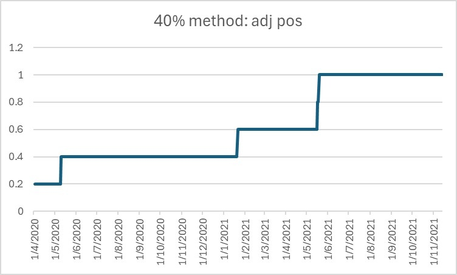
Equity curve如下：
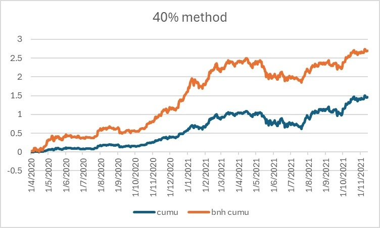
結果顯示，這策略Sharpe為1.78，而benchmark的則為2.33，即這策略仍然比benchmark差。整體資金使用率只有60%。
總結，不要有那麼多幻想，幻想你可以靠主觀判斷去摸底、去撈底。要賺錢，要不用最懶的方式DCA，就是擁抱量化交易、程式交易，從來沒有中間，沒有什麼認為下跌20%就是底部，沒有什麼等到下跌30%才買入這種無意義操作。